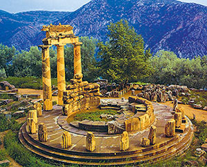
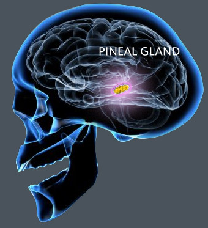
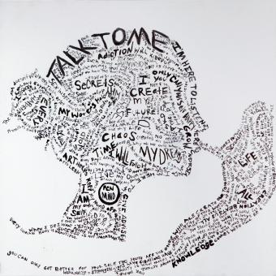

Ben kimim?
“Kendin ol!” Kaç kere duymuşuzdur bunu. Hatta Tarkan şarkısını bile yapmıştı: “Başkası olma, kendin ol, böyle çok daha güzelsin”. Kendimiz olunca güzeliz güzel olmasına da, kendimiz nasıl oluyoruz acaba? Ya da kendimiz dediğimiz şey, ben dediğimiz şey ne ola ki? Belki onu çözebilsek kendimiz olmak daha bir kolay olacak. Tarkan’ı benden, beni senden ayıran çizgiyi nerede çekmek lazım? Bu yazıda biraz “ben” dediğimiz şeyin ne menem bir şey olduğuna bakalım dedim prenses.
Eski Yunan’da Delphi tapınağının girişine “Know thyself” (Kendini bil) yazmışlardı yazmasına ama kendini bilmenin öyle ha diyince olacak bir şey olmadığı taa o zamanlardan belli idi. Filozoflar yüzyıllardır bu soruya cevap arıyor. Plato’yu biliriz, her şeyi özler ile, formlar ve idealar ile açıklamayı sever. Daha önce bahsetmiştim, Plato’ya göre gördüğümüz, bildiğimiz, dokunduğumuz bu dünyanın dışında bir de idealar dünyası var, bu dünyadaki herseyin formunun olduğu bir dünya. Bu dünyadaki hersey o dünyadaki formuna yaklaşmaya çalışır ama hiç bir zaman tam olarak o formda olamaz. Plato, seni sen yapan şeyin de böyle bir formu olduğunu savunur. Bu forma Yunancada “psyche”, günümüzde ise “ruh” değimiz şey karşılık geliyor: senin maddi olmayan, vücudundan bağımsız özün. Plato’nun psyche’si batı dinlerinde özellikle çok tuttu; yahudilik, hrististiyanlik, islam her biri bir şekilde Plato’nun bu psyche fikrini farklı farklı biçimlerde işlediler, resme daha fazla detay eklediler. Daha antik Yunan’da Aristo, Plato’nun biraz göklerde uçan fikirlerini yere indirmişti aslında. Aristo’ya göre sen bedeninden başka bir şey olamazsın, bedenin olduğu sürece varsın, bedenin yokolduğunda yoksun. Ama Plato’nun kulağa hoş gelen ölümsüzlük vaad eden psyche’si karşında Aristo’nun sen sadece bedeninsin teorisi nedense pek tutmadı Prenses.
Bandı bi 18 yüzyıl kadar ileri saralım. Descartes, “seni sen yapan şey bilinç, bilincinden başka hiçbir şeye güvenemezsin” dedi. Düşünüyorum öylese varım’ı duymuşsundur Prenses, Descartes işte benlik anlayışını bu temel üzerine inşa eder: kendinin farkındalığın senin varlığın özü. Kendinin farkında olan bu zihin sensin, vücud falan sadece bir aracı. Vücudun hakkında yanılabilirsin, kolun bacağın olmayabilir ve sana öyle geliyor olabilir, ama bu kendi hakkında düşünen zihin kendi hakkında düşündüğünden yanılamaz. Tabi zihnin ve bilincin derin sularından inşaata başlayınca, bu varlığından şüphe edemeyeceğimiz bilinci, varlığından gayet de şüphe edebileceğimiz bedene bağlamakta biraz zorlanır Descartes. Sadece Descartes değil, onun ardından gelen felsefecilere de zihin-beden problem diye bilenen, hala da daha çözümleyemediğimiz bir problem bırakır. Descartes çıkış yolunu dualizm denilen, iki tür temel madde vardır’cılıkda bulur. Birincisi bildiğimiz fiziksel maddelerin dünyası, ikincisi zihinsel maddelerin dünyası. Plato’nun hayaletini görüyorsundur umarım Prenses, hani idealar dünyası falan… Tabii, dualizm kolay bir çıkış sağlıyor sağlamasına ama adama sorarlar:
– Eee Descartes abi, madem iki farklı temel madde var, bunlar nasıl birbiriyle etkileşiyor? Ben vücudumun içinde gayet güzel takılıyorum sonuçta. Takılmıyor muyum yoksa?
Descartes’in cevabı çok yaratıcı Prenses, akıllara zarar. İnsan beyni corpus collusum denen köprü ile birbirine bağlanan iki yarım küreden oluşuyor. Descartes bu iki yarım kürenin birbiriyle tamamen simetrik yapılar içerdiğine inanır, sağ yarım kürendeki her kıvrımın, her sulcusun vs. sol yarım kürede bir eşi var der. Daha doğrusu pineal gland denen iki yarım kürenin ortasında, beynin merkezine yakın bir yerdeki alan dışında her şey simetrik görünüyor. Ahaaa der, işte burası ruhun beyindeki tahtı, zihnimiz vücudumuz ile buradan atraksiyona giriyor. (Pineal Gland’in ruhla falan hiç bir alakası yok Prenses aman mistik düşlere dalıp gitmeyesin, pineal gland serotoninden türetilen melatonin adlı bir hormonu salgılayan ve uyku/uyanıklık ritmi ve mevsimsel etkileri düzenleyen bir endokrin bezi. Ruhla zihinle yakından alası yok)
Locke tabi bu hikayeye kanmaz. Bilinç dedin güzel dedin Descartes abi, ama pineal gland, zihin, beden falan derken Gepetto Usta’nın Pinokyosu’na çevirdin bizi der. Şöyle her şeyi görerek dokunarak öğreniyoruzcuya (empirisist) yakışır bir şekilde benliğin ayaklarını yere bastıralım. Uçan kaçan zihni, pineal gland’den vücudu kontrolü falan bir yana bırakıp bilince geri dönelim, bu bilinç mühim bir şey. Kendimin farkında olduğum her an varoluyorum. Ama şimdi kendinin farkında olan ben, bir saat önce, ya da bir gün önce kendinin farkında olan ben ile aynı ben olup olmadığımı nereden bilicem? Hele ki ruha veya Descartes gibi uçan kaçan bir zihne inanmıyorsan bu oldukça zor bir soru. Belki sen sürekli kendinin farkında oluyorsun, ama her kendinin farkında olduğunda farkında olduğun şey başka bir şey oluyor. Yani sen sürekli değişiyorsun, ama kendinin farkında olma halin devam ediyor, kendini bilmenin tek yolu da kendinin farkında olduğun bu ince dilimlerden geçtiği için, kendinin sürekli farkında olsan da sürekli değişip başka bir şey olduğunun farkında olamayabilirsin.
Bir dakika abiler ya, bizim bu kendimizin farkında olma hali dışında bir de hafızamız var yaw der Locke. O kadar da donanımsız değiliz, kendimizi zaman içerisinde takip edebiliriz. Kendimizin bilincinde olduğumuz iki zaman diliminin bu kendinin farkında olan kişinin hafızasında bir sürekliliği var. Locke hafızayı insan zihninin daha önce duyularla algıladığı şeyleri, daha önce bunu algılamıştım etikeyle yeniden canlandırması olarak tanımlar. Hafıza algılar ve düşünceler için depo gibi bir şey. Bu depoyu kullanarak kendi geçmişimizi geriye doğru uzatabiliyoruz. Şu an bilgisayar başında yazı yazan kişi, bu sabah balkonda kahve-sigara keyfi yapan kişi, aynı zamanda dün de okula gitmiş olan kişi ve bu şekilde kendimi geçmişe doğru takip edebiliyorum. Yani bilincinde olduğumuz varlığımız sadece bir anla sınırlı değil, hafızamız sayesinde zamana yayılmış. Tüm anılarımızın kesişim kümesindeki şey işte ben dediğimiz şey. Felsefede Locke’dan bu yana geçen zaman içinde genel kanı, benlik konusunda Locke’un çocuğu koyduğu yönünde. Bilincin otobiyografinle birleştiğinde seni veriyor, senin sürekliliğini sağlıyor. Tabii bazı pürüzleri saymazsak.
Daha Locke’un zamanında ortaya çıkan ve hala çözülemeyen bir pürüz, Locke’in benliğin ne olduğu açıklamasının benliği var saydığı, yani döngüsel olduğu. Problemi basitçe söyle açıklayalım. Diyelim geçmişinle ilgili iki tane anın var ama bunlardan sadece bir tanesi gerçekten olmuş bir şey, diğeri ise başkalarından duya duya kanıksayıp yarattığın aslında yaşamadığın bir anı (ki böyle bir çok anımız var farkında olmasak da). Şimdi Locke diyor ki; benliğini oluştururken geçmişinde yaşadığın deneyimleri hafızan sayesinde birleştiriyorsun. Ama hafızanda böyle asılsız anılar varsa benliğini oluştururken bu tip asılsız anıları kullanmaman lazım. Yani hangi anıların gerçekten senin anın olduğunu, hangi anıların gerçekte aslında yaşamadığın şeyler olduğunu ayırt edebilmen lazım. Herhangi bir anıda bu benim anım, bu benim anım değil gibi bir etiket varsa, o zaman benliği açıklamaya çalışırken benliği varsaymış oluyorsun. Böyle bir etiket koymazsan, herhangi bir anının gerçekten senin anın olup olmadığını bilemiyorsun. Yani ya bu benlik için hafıza kriteri döngüsel ya da benliği açıklamada yetersiz.
 Çoğu felsefeci Locke’un hafıza kriterini pürüzlerine rağmen kabul etti dedik ama bir de benlik hakkında toptan şüpheciliğe yol açan başka bi gelişme yine bir empirisist olan Hume’den geldi. Hume, Locke’a sen ne biçim her şeyi görerek, dokunarak öğreniyoruz’cusun diye çıkışır. Şu an farkında olduğum şeylere bakıyorum bakıyorum, ne kadar derinlemesine bakarsam bakayım duyu organlarımdan gelen duyular dışında başka bir şey göremiyorum. Ben dediğim şey duyusal deneyimlerim içinde yok. Tek gördüğüm şey masalar sandalyeler ve onlarla etkileşim halinde olan eller kollar falan. Ben dediğim şey görebildiğim, dokunabildiğim bir şey değil, yani benliğimi deneyimlerinden öğrenmiş olamam. Duyularımdan öğrenmediysem başka nerden öğrenmiş olabilirim ki? Hume bir empirisiste yakışan şekilde “hiç bir yerden” diye yanıt verir. Duyularımdan öğrenmediysem ve başka bir yerden de öğrenemeyeceğime göre, ben diye bir şey yok o zaman. Ben dediğimiz şey bizim kafamızda yarattığımız bir illüzyon, aslı astarı yok aslında.
Çoğu felsefeci Locke’un hafıza kriterini pürüzlerine rağmen kabul etti dedik ama bir de benlik hakkında toptan şüpheciliğe yol açan başka bi gelişme yine bir empirisist olan Hume’den geldi. Hume, Locke’a sen ne biçim her şeyi görerek, dokunarak öğreniyoruz’cusun diye çıkışır. Şu an farkında olduğum şeylere bakıyorum bakıyorum, ne kadar derinlemesine bakarsam bakayım duyu organlarımdan gelen duyular dışında başka bir şey göremiyorum. Ben dediğim şey duyusal deneyimlerim içinde yok. Tek gördüğüm şey masalar sandalyeler ve onlarla etkileşim halinde olan eller kollar falan. Ben dediğim şey görebildiğim, dokunabildiğim bir şey değil, yani benliğimi deneyimlerinden öğrenmiş olamam. Duyularımdan öğrenmediysem başka nerden öğrenmiş olabilirim ki? Hume bir empirisiste yakışan şekilde “hiç bir yerden” diye yanıt verir. Duyularımdan öğrenmediysem ve başka bir yerden de öğrenemeyeceğime göre, ben diye bir şey yok o zaman. Ben dediğimiz şey bizim kafamızda yarattığımız bir illüzyon, aslı astarı yok aslında.
Hume’un benlik hakkında şüpheciliği felsefede derin bir bölünmeye yol açar. Bir grup felsefeci Hume haklı beyler, ben diye bir şey yok derken, diğer bir grup yok yav olur mu öyle şey biz Locke’un hafıza kriterini modifiye edip bir şekilde bir ben bulup çıkarırız diye çalışmalarını sürdürdüler. Bu hengamede oldukça dikkate değer bir gelişme ünlü Alman düşünürü Kant‘dan geldi. Kant, Hume ile Locke arasında arabuluculuğa soyunur. Önce Hume’a dönüp, ya sen çok güzel dedin, ben dediğimiz şey duyusal deneyimimizin gerçekten bir parçası değil, benliğimizi ne kadar uğraşırsak uğraşalım deneyimleyemiyoruz. Ama öte yanda Locke’cular bak, ben ben ben diye ağlıyorlar, çok güçlü bir biçimde bir benliklerinin olduğuna inanıyorlar, sanki benliklerine olan inançlarını kaybederlerse kafaları kesilmiş kuşa dönücekler. Ben dediğimiz şey deneyimlerimizin içinde değilse, ama dünyada deneyimler yaşayabilmemiz için gerekliyse, demek ki ben dünyada olası deneyimler yaşamanın ön koşulu. Yani senin bir şeyleri algılayabilmen için, onları algılayan bir özneyi, bir şeyler yapabilmen için o şeyleri yapan bir özneyi varsayman gerekiyor. Eğer bu varsayım olmazsa deneyimlerin, hareketlerin, davranışların ortak bir payda altında buluşmayacak, hepsi darma dağınık olacak. Orada bir masa var, şurada bir sandalye, bacakta bir ağrı var, midede bir kazınma, yağmur yağıyor, hava karanlık, nerde o eski zeytinyağlı dolmalar… Duyu organları sadece olan biten şeyleri rapor ediyor, hiçbir şeyin başka bir şeye göre bir ilişkisi bir değeri yok bir ben varsayımı olmazsa.
Kant’ın bu “ben dediğimiz olası deneyimlerin önkoşuludur” fikrinin ondan önceki gelen felsefecilere göre en büyük farkı, “ben” dediğimiz şeyin aslında bir “şey” olmadığı tam tersine bir aktivite olduğu yaklaşımı. Plato’dan Kant’a kadar olan süreçte ben dediğimiz şey bir idea, ruh, öz, bilinç gibi başka başka isimler altında da olsa hep kendi içinde bir bütünlüğü olan bir özne gibi bir şey olarak düşünülmüştü. Kant ile ilk defa, ben değimiz şeyin kendi içinde bir bütünlüğü olan özne gibin bir şey gibi düşünmek yerine, insan beyninin dünyadaki deneyimlerimizi organize ederken kullandığı bir kural, bir varsayım olarak düşünmenin daha mantıklı olacağı fikri ortaya çıkıyor. Aha işte bak bu sen oluyorsun diye işaret edip gösterebileceğimiz bir şey yok benliğimize karşılık gelen. Ne bu dünyada ne başka dünyada. Bu dünyada yaşadıklarımızı duygularımızı, deneyimlerimizi, gördüklerimizi duyduklarımızı ben dediğimiz varsayımsal bir özne altında organize etme aktivitemiz ve buna göre davranmamız benliğimizi oluşturuyor.
Bandı biraz daha ileri sarıp günümüze gelirsek Prenses, benlik hakkında en çok kabul gören yaklaşım Locke, Hume ve Kant’ın yaklaşımlarının ortaya yanarlı dönerli bir karışımı aslında. Günümüzde felsefede olsun, psikolojide olsun en çok kabul gören teori hayatımızı bir hikaye olarak algıladığımız ve benliğimizin bu hikayenin baş kahramanı olduğu yönünde. Dennett, mesela, insanın kendini koruma, kendini kontrol etme, kendini tanımlamak için kullandığı temel taktiğin hikaye anlatmak olduğunu, özellikle de kendimize ve başkalarına kim olduğumuz hakkında uydurduğumuz ve kontrol ettiğimiz hikayeler olduğunu savunur. Bu sürekli hikaye akışı sanki tek bir kaynakdan geliyormuş gibidir. Sadece kelimenin basit anlamında tek bir ağızdan, tek bir kalemden gelen bir kaynak değil, daha da derin bir anlamda: Bu hikayeler dinleyenlerini bu kelimelerin sahibi, bu kelimelerin tanımladığı bütün bir kişilik atfetmeye itiyor. Yani dinleyenler hikayenin bir ağırlık merkezi olduğunu varsayıyorlar, hikayenin ağırlık merkezindeki kişi de sen oluyorsun.
Dennett hepimizin dahiyane bir romancı olduğunu düşünüyor yani. Hayatımız boyunca bir sürü davranışta bulunuyoruz, çoğunlukla birbiriyle tutarlı ama bazen de tutarsız. Her ne kadar birbiriyle tutarlı veya tutarsız olsa da davranışlarımızın önüne en güzel maskemizi takıyoruz. Hayatımızda yaptığımız şeyleri güzel bir hikayeye dönüştürmeye çalışıyoruz. Ve bu hikaye otobiyografimiz oluyor. Bu hikayenin merkezindeki kurgusal baş karakter de benliğimiz.


{kind=link}
{kind=link}
{kind=link}
İşte en sevdiğim felsefe, varoluş felsefesi! 🙂 Epey bütünsel ve akıcı bir kaynakça yazısı olmuş Nazım, ellere sağlık.
Şimdi bir kaç sorum olacak, bu abiler yıllarca düşünmüş, sen de hepsini yalayıp yutmuşsun.. bi yardımcı oluver:
1) Dennett abi güzel demiş, günümüzde de epey tutmuş dedikleri ama yine de kendi romanını yazan kişinin bu romanı neye dayanarak yazdığı hala bi muamma bende. Yani bence Dennett bu senin bahsettiğin tutarlı veya tutarsız davranışların önüne geçirilmiş ben maskesini açıklıyor ama bu tutarlı ve tutarlı ya da tutarsız davranışlar için “kendi”nden gelen motivasyonu/insiyatifi açıklamıyor. Bana göre “ben” denilen şey daha çok bu davranışların özüyle ilgili. Bunu deneyimlere bağlayabiliriz, evet. Ama bir de çocuklardaki böyle davranışlar altında yatan bir “ben” var mesela. Hadi çocuklarda aile eğitimine bağladın, bebeklerde neye bağlayacağız? Nature vs. nurture tartışmasına bağlamak istemesem de hafiften yoklamıyor değil hani… Başkasına göstermek istediğimiz “ben”in farkında olsak da olmasak da aslında bir şekilde varlığından haberdar olduğumuz kendimiz veya başkaları için (bazen saçma, bazen işe yarar olan) tercihler yapmamızı sağlayan bişiy. Ne ki o?
2) Rüyalar… Hikayenin baş kahramanı yaptığın kendini rüyanda bazen, evet, baş kahraman olarak canlandırıp tecrübelerine veya isteklerine göre maceradan maceraya koştururken bazen de hiç tanımadığın bir yerde hiç tanımadığın bir kimsenin başına gelen bir şeylere tanıklık ediyorsun. Bu “ben” rüyayı nasıl tasarlıyor olabilir ki?
Bak rüyalardan filan girince Plato’ya mı yaklaşıyoruz ne? 🙂 Ben aralarında en çok Kant’ı severim, ayrı…
Eyvallah genc, zor sorular sormussun, elimden geldigi kadar cevaplamaya calisayim.
1) Bu roman neye dayanilarak yaziliyor, Dennett’in yaklasim o konuda biraz zayif, hatta kendisi de farkinda bunun. Dennett mesela Gilbert isimli bir robot dusunelim diyor, bu robot oyle programlanmis ki cevresinde olup bitenleri kendi hakkinda hikayelere donusturebiliyor. Robotun baslangicte bir benligi yok, ama Dennett’e gore basina gelenleri anlattikca, kendi hayat hikayesini yazdikca bir benligi oluyor, tabi bizim sahibi oldugumuz gibi kurgusal bir benlik bu. Yine de baska felsefeci abiler tam da senin sordugun soruyu sordular, benligi olmayan bir robot nasil kendi hayati hakkinda bir roman yazabilir ki? Hatta nasil romani yazilcak bir hayati olabilir ki? Her romanin arkasinda bir yazar yok mudur sonucta? Dennett’in cok dogru duzgun bir cevabi yok acikcasi, sofistike bir sekilde programlanirsa yazabilir diyor.
Davranislar/motivasyon konusuna Dennett pek girmiyor, ama Dennett elestiren abilerden biri, Velleman, davranislarimizi hayat hikayemizi en uygun sekilde devam ettiricek sekilde seciyoruz diyor. Yani basta bu hayat hikayemiz oylesine yazilirken, hikaye zenginlestikce bizim davranislarimizi da belirler hale geliyor, bir durumla karsilastigimizda hikayemizdeki karaktere en uygun hareketi seciyoruz diyor. Yani Dennett bizler kurgusal bas kahramanlariz derken, Velleman bas kahramanlariz ama kurgusal degiliz diyor, bu kahraman gayette kararlarimizi etkiliyor diyor, etkiledikce de gercek oluyor.
Tabi tercihler konusuna girince, hepsi sadece hayat hikayemizden geliyor olamaz dedigin gibi. Ona icinde yasadigin sosyal toplumdan edindigin durumlara gore davranis kaliplari, duygularinin ve icgudulerinin davranislarina etkilerini falan da eklemek lazim. Bebeklerde bir “ben” var mi emin degilim. Genelde felsefeciler 5-6 yasindan once bir benlik atfetmezler, ki o yaslara gelindiginde zaten otobiyografik hafiza gelismis oluyor. Her hangi bir sekilde az cok mantikli davranan her canlinin bir benligi var diyemeyiz, ya da en azindan felsefecilerin anladigi anlamda bir benligi yok. Sonucta benligi var mi yok mu sorusu, benligi nasil tanimladigina bagli, eger bilinc arti otobiyografik hafiza diyorsan bebekler o kategoriye girmiyor.
Ama dedigin gibi, bu hikayede eksik bir seyler bence de var, bu konuda bir iki yazi daha yazicam bazi eksikler o zaman giderilebilir, bir de doktora tezimi bu konuda olucak asil o daha kapsamli cevaplar icerecek ama simdiden spoiler yapmayayim 🙂
2) Ruyalar konusunda hic bir bilgim yok, hatta bildigim kadariyla hic kimsenin neden uyudugumuz nasil ruya gordugumuz hakkinda dogru duzgun bir fikri yok. Daha biz neden uyudugumuzu ve nasil ruya gordugumuzu anlayamamisken, ruyalarda ki benlige hic girmemek lazim, Plato’ya da yaklasilir ruhlara cinlere de 🙂
İlim ilim bilmektir
İlim kendin bilmektir
Sen kendini bilmezsin
Ya nice okumaktır
Okumaktan murat ne
Kişi Hak’kı bilmektir
Çün okudun bilmezsin
Ha bir kuru ekmektir
Okudum bildim deme
Çok taat kıldım deme
Eğer Hak bilmez isen
Abes yere gelmektir
Dört kitabın mânâsı
Bellidir bir elifte
Sen elifi bilmezsin
Bu nice okumaktır
Yiğirmi dokuz hece
Okursun uçtan uca
Sen elif dersin hoca
Mânâsı ne demektir
Yunus Emre der hoca
Gerekse bin var hacca
Hepisinden iyice
Bir gönüle girmektir
Yunus Emre
Ah be Nazım, aylar önce ıslak ve rüzgarlı bir günde araya sıkışıveren kahvenin devamına savruldum bu yazıyı bir hafta boyunca erteleyip nihayet okuyabilince…
Elif’le girdiğiniz bebek diyaloğundan bir serbest çağrışımla Lacan’ın aynasını düşündüm. Bebeklikte ayna karşısındaki görünümün ayırdına varılması, kişinin anasından ayrı bedensel bütünlüğe sahip bir canlı olduğu fikrini kavramasına dramatik biçimde yol açıyor iddiasının konu olduğu bir derste dinlediğim bir örneği hatırladım. Misafirliğe gidilen bir evde, evin altı-yedi yaşlarındaki çocuğu tatil fotoğraflarını misafirlere gösterirken, her fotoğrafta kendini bulup, parmağıyla gösteriyormuş: “Bakın ben de oradayım.”
Fotoğraflar, özellikle de gittiğimiz yerlerde insanlara “bir fotoğrafımızı çeker misiniz?” diye sorarak (meren gibi bir kolumuz yoksa) çektiğimiz fotoğraflar erişkin yaşlarımızda da bizi hafızamızın, hatıramızın içine yerleştiren kanıtlar toplama fikrinden mi gelişiyor acaba? Hadi öyle diyelim, çektiği fotoğraflarda görünmek istemeyenlerin, (nedenlerden yalnızca biri bu olsa bile) görüntüsünden mutlu olmayan insanların benlikleriyle ilgili ne ipucu verir bu soru bize?
Varlığın deneyim biriktirmek ve bunu sadece duyularla yapabilmek üzerinden açıklandığı düşünce evreninde, bunun araçsallığı olarak bedeni tanımlayınca, bedenle kurduğumuz ilişkiye yüklenen sorumluluğu nasıl tartışabiliriz? Duyu organlarının yokluğunun, benliği dönüştüren yanları üzerine ciltler çıkar, ya eş olma halleri? İkizler? Duyu organlarının birbirleri yerine çalışabilme yeteneklerinin gelişimi? Hikaye anlatıcılığını düşünürken, bununla ilgili tüm diğer duyuları kapatıp, yalnızca dokunarak öğrenmek zorunda olan sağır ve kör Helen Keller’ın dil öğrenmesi, dahası üniversite bitirebilecek kadar azmi, “tamlığa” önem veren dünyamıza dair neler söyler bize?
Eyvallah Loker bro, her biri hakkinda ayri bir yazi yazilasi yorumlarina elimden geldigince cevap vermeye calisayim.
Elif’in yoruma cevap yazarken benim de aklima gelmisti aynada kendinin farkina varma olayi. Bu yazida pek bahsetmedim ama felsefeciler ve gelisim psikologlari bir de benligin katmanlarindan bahsederler siklikla. Core self dedikleri, daha cok kendi fiziksel varliginin farkinda olma hali aynada kendininin farkina varabilmeni sagliyor diyebiliriz sanirim. Ama bu dedigim gibi daha cok fiziksel bir farkindalik, kendi karakterine veya ruhuna dair cok bir farkindaligin yok bu asamada. Misal bazi maymunlar da ayna testini gecebiliyor.
Fotograf olayi, hem fotolarda kendini gosterme, hem fotolarla kendini arsivleme olarak daha da ilginc. Cocuklarin kendini bulup gostermelerinin hangi zaman araligina denk geldigi onemli. 4-5 yaslarindan once cocuklar baya ba amnezik, otobiyografik hafizalari gelismedigi icin cok yakin zamanlarda olan seyler disinda pek bir sey hatirlamiyorlar(bu doneme dair olan anilari da aslinda aileleri tarafindan yaratiliyor), ama bu surede ebebeyinleri tarafindan sik sik gecmisleri onlara hatirlatiliyor (zaten bu sekilde gecmislerini hatirlarinda tutmayi ve baskalarina anlatmayi ogreniyorlar) Velhasil fotografta kendilerini otobiyografik hafizalari gelistikten sonra gosteriyorlarsa, orada otobiyografik hafizanin baska bir formunu goruyoruz sanirim. Ama otobiyografik hafizanin gelisiminden daha once ise, o zaman acip bakmak lazim 🙂
Kendini fotolarla arsivleme olayi muhtemelen kanit toplama ve baskalari ile paylasma amacli (anilarimizi hatirlama sebebimiz de bence baskalari ile paylasabilme amacli). Yani ani fotograf paylasimi, paylastiklarimiza aldigimiz yorumlar vs. benligin sosyal insasinda oldukca onemli bir yer tutuyor. Fotograf, video ile bir ilginc olay da onlarin sabit degismeyen dogalari. Normalde otobiyografimiz cok fleksible bir yapiya sahip, surekli tekrar insa ettigimiz, o gunun sartlarina ve kendimizi algilayisimiza gore yeniden ve yeniden yazdigimiz bir sey. Ama foto ve video oyle degil, yoruma cok acik degiller. Bazi psikologlar otobiyografinin bu degisken yapisinin oldukca saglikli bir sey oldugunu, bir karaktere omrun boyunca takilip kalmamani sagladigini soyluyorlar. Bu sartlarda siki arsivlenmis fotolu videolu hiper gercek ve sabir bir otobiyografi iyi mi kotu baya tartisilir bir mevzu.
Beden baglantisi da super, benim tezde uzerine oldukca egilmeyi dusundugum bir mevzu. Elif’in yourma cevap verirken bahsettigim Velleman amca, baska bir makalesinde hikayeleri bedensel olarak algiladigimizi savunuyor. Velleman hikayelerin temelde muzik melodileri gibi belli duygusal gecisler uzerine kurulu oldugunu, belli duygu kombinasyonlarinin guzel hikayeler olusturdugunu dusunuyor. Cogu bilim adami duygular ise kendi bedenimizi hissetmemiz olarak acikliyor, ne biliyim korku dedigin sey kalp hizinin artmasini hissetmen, nefes alisverisinin artmasini hissetmen hede hodo. Ikisini birlestirdigin zaman aslinda kendi hayatimiz ile ilgili anlattigimiz hikayeler birden cok katmanda kendi bedenimizle ilgili anlattigimiz ve bedenimizle hissetigimiz hikayeler. Ama bu benlik-beden mevzusu cok derin, ilerde hikayeler ve beden uzerine ayrica bir yazi yazacagimdir.
Yazını zevkle okudum, muhabbeti zevkle takip ettim. Aklıma şu takıldı. EMDR diye bilinen travma tedavisi ya da terapisi benim de yakinen deneyimlediğim bir metod. Deneyimim üzerinden şunu söylemek isterim: 3 yaşında travma sebebi olmuş bir anıyı metod ile şu an yaşıyor gibi deneyimledim ve üzerine gittim. Yani 3 yaşında dahi “ben”e dair bir farkındalık ve de hafızaya sahip olunduğunu gördüm. Ayrıca yine EMDR hafıza ve ben denkleminde ilginç bulgular sahibi bence. Bilmiyorum ne kadar yakınından ya da uzağından geçiyorum çalışmalarının ama bu konuya dikkatini çekmek istedim. Hem geçerken uğradım. Sevgiler…
Eyvallah Nergiz, EMDR metodunu daha once duymamistim, ilginc bir metodmus. Yanliz daha uc yasinda benlige dair bir farkindaligimiz var mi sorusuna biraz daha dikkatli yaklasmak lazim. O devreden sadece bir kac olay/durum hatirlamamiz o devrede bir benligimiz oldugu anlamina gelmiyor. Elif’in sorusunu yanitlarken soyledigim gibi, felsefecilerin anladigi benlik biraz daha fazla sey istiyor, otobiyografik hafiza yani olaylari/durumlari belli bir zamansal sureklilige oturtup belli bir iceriksel butunlukle harmanlayip bir ana kahraman cevresine organize etme ve bunun bilincinde olma. Cocuklar konusmaya baslamalari ile birlikte 2 yas civarlarindan itibaren gecmislerinden bir seyler hatirliyor. Yani 3-4 yaslarindayken bir hafta once ne yaptiklarindan falan bahsedebiliyorlar, ne bileyim onlari cok etkileyen bir olay olduysa daha da eski olaylari da hatirlayabilirler. Ama 5 yasina kadar olan doneme cocukluk amnezisi(childhood amnesia) denmesinin sebebi bu anilar daha genel bir yasam hikayesine baglanmadigi icin zamanla kaybolup gidiyor. En fazla duygusal anlamda cok etkiliyici bir iki adacik kaliyor bu 5 yas oncesi devreden. Ve onlarda hayat hikayesine ya zamansal bir sureklilik icinde baglanamiyor, ya da baglaniyorsa bile bu daha sonra cevrendeki insanlardan duyduklarinla doldurmaca olarak yapiliyor, ki neyi doldurdugumuzu neyi gercekten hatirladigimizi test etmek cok zor. Velhasil, psikoterapik yontemlerle bu adaciklara ulasilmasi, bu adaciklarin benlik dedigimiz anakarayla o zamanlardan iliskide oldugunu pek gostermiyor, en azindan felsefecilerin anladigi anlamda ki benlikle.
Geri yazmana sevindim. Evet aslında felsefecilerin anladığı anlamdaki benlik’e dair çok iyi bilgi sahibi değilim. Fakat -eğer yanlış anlamıyorsam- bu yazdıklarından merak ettiğim (kaba tabirim için affet) illa ki benlik denilen şeyi bir hikayeler birikimi ve bütünü kıstası ile mi açıklamak durumundayız ve şu noktada hafızanın benlik üzerindeki rolü olduğundan fazla mı görülüyor acaba? neyse, belki teğet geçiyorum söylediklerini bilemiyorum zira konu hakkında felsefe literatürünün ne dediğini çok da bilmem ama “benlik” kavramına dair içgözlemim bu şekilde 🙂
sevgiler…
illa ki benlik denilen şeyi bir hikayeler birikimi ve bütünü kıstası ile açıklamak durumunda degiliz tabi ki, baska ve daha iyi bir alternatif bulabilirsek ona ziplariz hemen. Ama felsefecilerin iyi olduklari bir nokta, bir konuda butun olasi alternatifleri enine boyuna gozden gecirip, iclerinden en iyisini secmeleri. Yani, Descartes’in yaptigi gibi ruh gibi bir sey ortaya atmadan, sadece beynimizdeki bilissel kapasiterle benligi aciklayacaksak, otobiyigrafik hafiza elimizde ki en iyi secenek gibi gorunuyor. Sonucta insanlar biyolojik olarak bir birlerine cok benzer, onlari birer birey olarak farkli kilan daha cok yasadiklari deneyimler sonucunda sekillenmeleri ve hafiza bunu iyi ozetliyor. Velhasil, bir zorunluluk yok, eldeki alternatifler icinde en iyisi oldugu icin hafizayi, hikayeleri vs. one cikariyoruz.
tuna son tel konuşmamızda yeniden prenses’e dikkatimi çektiği icin ve facebook’ta cemal’in paylaşımını gördüğüm için buradayım. yaptığın felsefe yolculuğu ve burada birikimini özetlediğin için, sağol nazım 🙂 “ben” bir düşünceden ibaret gibi göründüğüne göre, insanın “Öz”üne yaklaşmak için hayat boyu edindiği yargılarla “yazdığı” hikayelerden arınmak gibisi yok. Yoksa, her vaziyette “akıl” bize yetmiyor ve bilimsel çalışmalar ne kadar yetki olursa olsun, “filin neresini tutarsa fili oradan tanımlayanlar” gibi hiçbir yere gidilemiyor galiba.
ben de nergiz gibi dikkatini farklı birkaç alana çekmek güzel olur, diye düşündüm: birincisi, bert hellinger’in “aile dizimi” (family constellation) çalışmalarını, almanya’dan sonra istanbul’da da uygulayan bir dostumla, bir bireysel, bir de grup çalışmasına katılmıştım. değil çocukluk ve bebeklik, insanlar anne karnından çok daha önce, kuşaklar öncesindeki deneyimleri bedenlerinin herbir hücresinde kayıtlı olarak taşıdığını görebiliyorsun orada! [sanırım 90’ların sonunda verilmiş bir kimya nobel ödülü varmış, insanın atalarından gelen “bilgi”nin RNA’lar aracılığıyla kuşaklar boyu aktarıldığını gösteren çalışmaya verilen. zamanın olursa bak, belki yanılıyorumdur].
ikincisi, bedendeki belleği, akupunktur noktaları ve meridyenler üzerinden uyararak ve çalışmayan programlara takılmış bir bilgisayar gibi “reset” ederek sağaltan Emotional Freedom Technique (EFT).
üçüncüsü ise, benim için bugüne dek yaşadığım en özgürleştirici deneyimlerden biri. insanın “bildiği/inandığı, ama kendisine maddi manevi hastalık olarak geri döndüğü ortaya çıkan bazı inançlarını dönüştürmek için kullanabileceği “WHO WOULD YOU BE WITHOUT YOUR STORY?” ana ekseninde sorulan 4 basit soru (is it true? can you know that it is absolutely true? what do you feel/how do you react when you believe this thought? who would you be without this thought) artı düşünceyi tersyüz etme çalışmasıyla yapılan “THE WORK” oldu.
sağlığı, canlı ve sağlıklı organizma üzerinden değil de kadavralar üzerinden keşfettiği için, bağışıklık sistemimize, “inancın biyolojisi”ne metelik vermeyip, bizi bölüp parçalayıp, sadece bir et parçası gibi ele alan günümüz tıp endüstrisi nasıl bize artık şifa vermekten, sağlığımıza hizmet etmekten iyice uzak düştüyse, parçalara bakıp bütünü bulmaya çalışan bilim de öylesine bir çıkmazda olabilir mi acaba? yoksa tümden saçmaladım mı? sevgi ve selamlar 🙂
Prenses semalarina hosgeldin Melda, bati felsefefesinin ozetini kabullenmeyen sorgulayici yorumun icin de ayrica tesekkurler 🙂 Elimden geldigince yanit vereyim degindigin noktalara.
Birincisi, birazcik yaziyi kontexte oturtma. Bu yazi bati felsefefesinde “ben”e caglar boyunca nasil bakildiginin bir ozeti. Ben bu ozete inandigim icin degil, benlik uzerine bir yazi dizisi icin guzel bir baslangic noktasi oldugu icin bunu yazdim. Cok yakin zamana kadar tez konum benlik uzerine olucakti (bir iki hafta once maymun istahligimla baska bir konuya zipladim), ve o tez de benim asil savunmak istedigim de benligin bu resminin eksik oldugu, duygulari ve bedeni ihmal ettigiydi. Hatta yarin ayrik beyin vakalari ile bir yazi yayinliycaz, orada bu hikaye anlatan yorumcuya pek de guvenemeyecegimizi savunuyor olucam, tam da senin degin gibi hayat boyu edindigi yargilarla yazidigi icin. Yani bence benzer noktalardan yaklasiyoruz olaya.
Ikincisi, bilim ve parca-butun iliskileri. Bilim dallarinin eksikleri var, cikmaza dustugu noktalar da oluyor. Ama ote yanda ayni bilim bir sure cikmazlarda debelendikten sonra silkinip bambaska paradigmalara da sicrayabiliyor. Misal somut bir paradigma degisimi su aralar beyin uzerindeki calismalarda yasaniyor. Yakin zamana kadar beynin parcalarina bakip onu cozmeye calisan zihinbilimciler, beynin parcalari ile degil butensel olarak calistigini hemen hemen kabullenmis durumdalar. Ona gore de hizla methodlar degisiyor, su aralar daha global olcekte beyin networkleri arastiriliyor. Ote yanda, sadece beyne bakmanin yeterli olmayacagini savunan embodied cognition denen akim da vucudu ve dunyayi resmin icine ekliyor ve bu yaklasim giderek populerlesiyor psikolojide, yapay zeka calismalarinda ve zihinbilimde. Demek istedigim, bilim su ana kadar belli bir tarzda yaklasti diye hep o tarzda gidicek diye bir sey yok, ufkunu genisletmesini biliyor gerektigi yerde. Ama bilim varligi deneysel yontemlerle gosterilebilir adimlarla ilerliyor ve bu degismeyecek. Bir cok inanc sisteminden belki daha yavas ama daha saglam adimlarla ilerliyor yani ve bence umut var.
Ucuncusu, bahsettigin yontemler. Daha once bu yontemleri duymamistim ama benzerler yontemler duymustum. Eminim etkili yontemlerdir ama soyle bir kac sey gozume carpiyor. Bir, eminim vucudumuzda RNA’larda, hucrelerde surda burda eski kusaklardan kalma bilgiler vardir, ama bu bilgilere biz, beynimizin sagladigi bilinc sayesinde birseylerin farkinda olabilen varliklar, ulasabilir miyiz? Normalde bizim kendi beynimizde ve disarida olan bitene erisimimiz cok kisitli, ve belli duyu sensorlerine bagli, ne biliyim sicakligi algilayabiliyoruz cunku vucudumuzda thermoreceptorler var. Ne biliyim eski anilari hatirlayabiliyoruz cunku temporal medial lobemuz dikkat mekanizmalarimiz tarafindan erisilebilir vesaire. Ama RNA’miza veya hucrelerimize bu sekilde bir erismimiz var mi hic bir fikrim yok ve varsa bu nasil bir mekanizma ve neden boyle bir erisim mekanizmasi evrim suzgecinden gecebilmis bilemiyorum.
Iki, bu yontemlerle “oz”une yaklasmak derken dikkatli olmak lazim. Bati felsefesi seni sen yapan bir seylerin varoldugu varsayimiyla basliyor. Bu ozlu tozlu sorular Plato’nun bizlere biraktigi bir miras. Ama mesela dogu felsefesinde boyle ozler-tozler toptan reddedilir biliyorsundur. Benliginin gercek ozunu bedeninde bulacagini dusunuyorsan burada bir yanilsama var bence, bedeninde bulacagin bir benliginin olmadigidir, sen de diger organik varliklar gibi, daha buyuk bir inorganik dunyanin devinen enerji parcaciklarinin bir sureligine olusturdugu az cok dengeli bir enerji yiginisin ve kisa bir sure sonra tekrar o inorganik butune karisip yokolacaksin. Benligine dair spirituel, anlamli, derin bir seyler yok bedeninde. Hume ben diye bir sey yok derken bu tip bir seyden bahsediyor misal, Spinoza ve Schopenhauer’de ayni sekilde, surada daha detayli yazmistim bu konuda:
http://www.prensesemektuplar.com/2010/07/kant-schopenhauer-ve-varolus-ustune.html
Ve bilim de olsun felsefede olsun azimsanamayacak sayida insan bu metafizik resmin farkinda ve kabul ediyor. Benim yazi da cok iyi veremedigim detay, misal Dennett hikaye anlaticisin derken aciklamaya calistigi benliginin ozunde ne oldugu degil, neden bir benligin olduguna inandigin, neden baskalari bir birlerinin benlikleri olduguna inandiklari. Hani, benlik bir yanilsamaysa, bu yanilsama hangi bilissel mekanizmalar sonucu ortaya cikiyor. Yoksa Dennett gercek bir benlik bir oz olduguna inanmiyor, bu bir illuzyon, kurgu diyor. Bedenine bakinca gercekte ne oldugunun farkina variyorsun, hicbir sey olmadiginin, diyorsan Dennett ve bati felsefesinde ve bilimindeki bircok dusunurden cok uzakda degilsin.